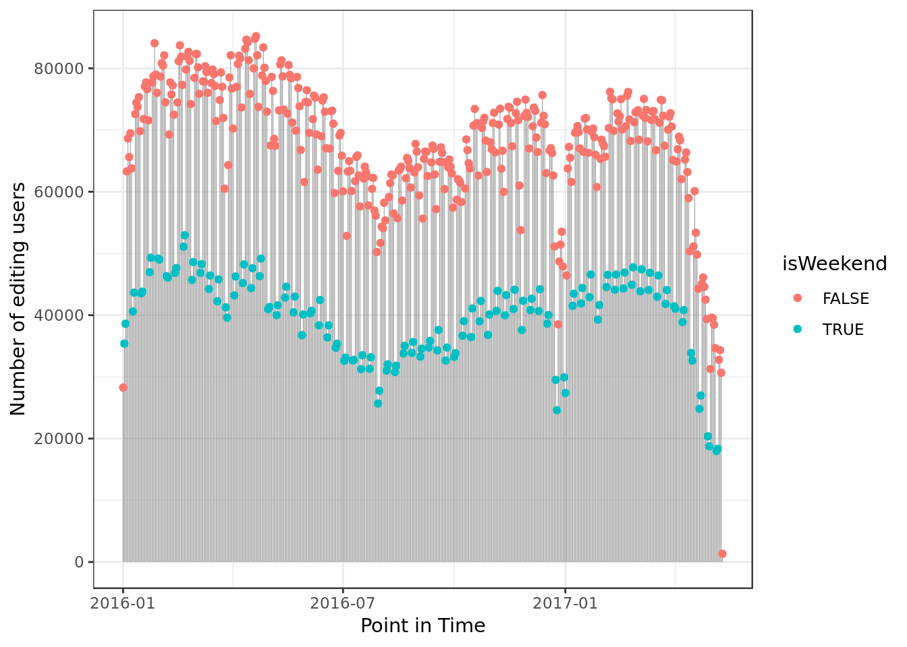
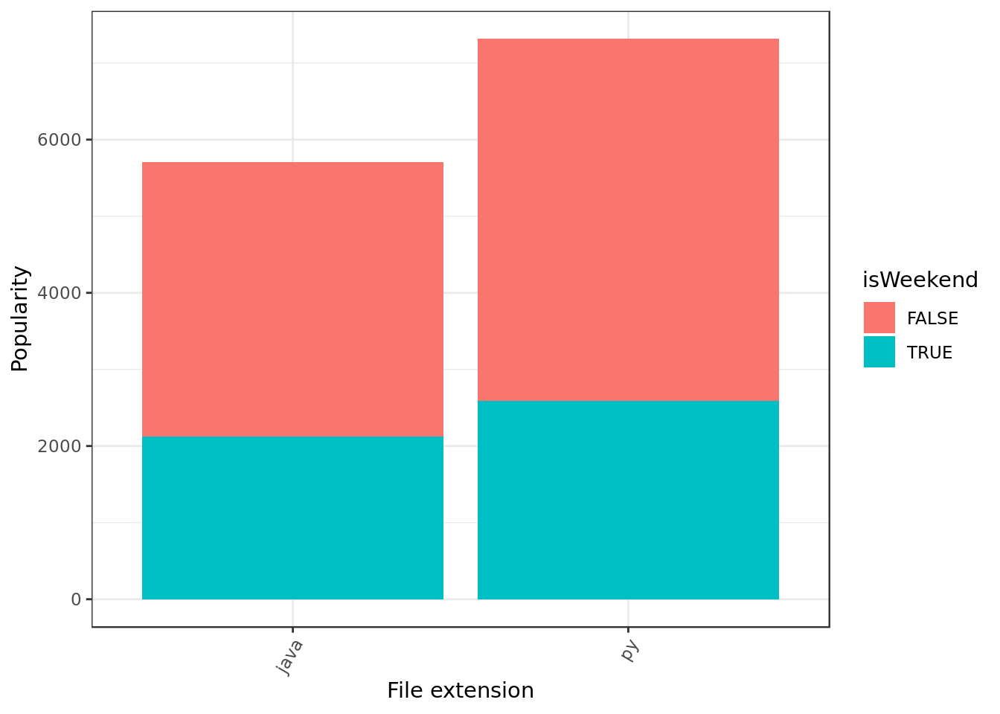
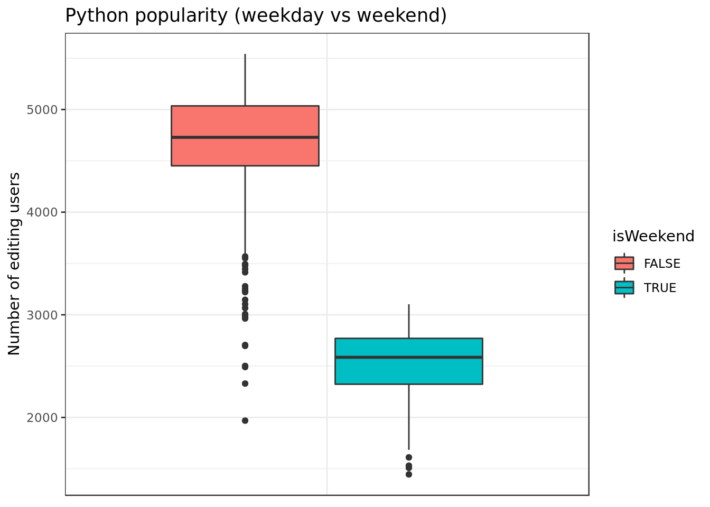
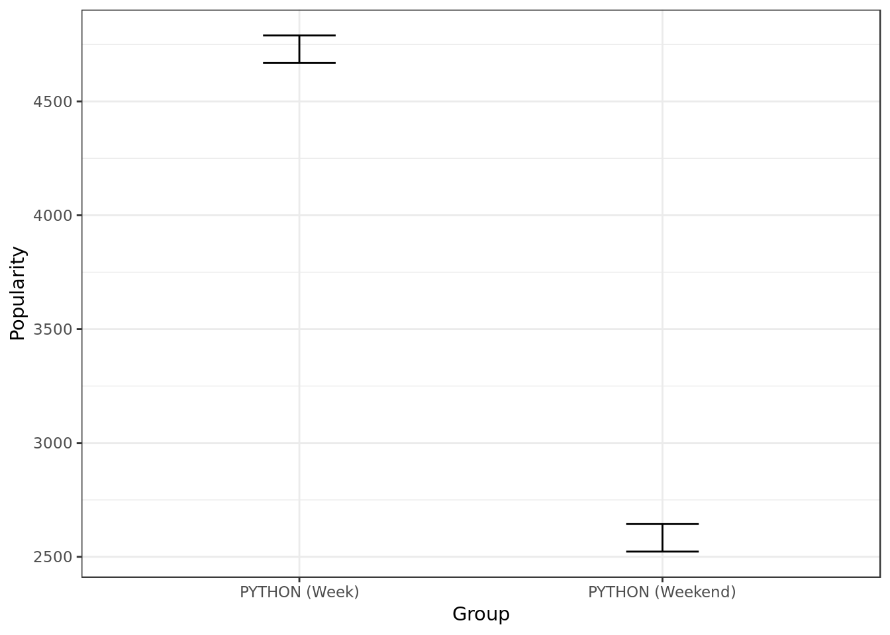
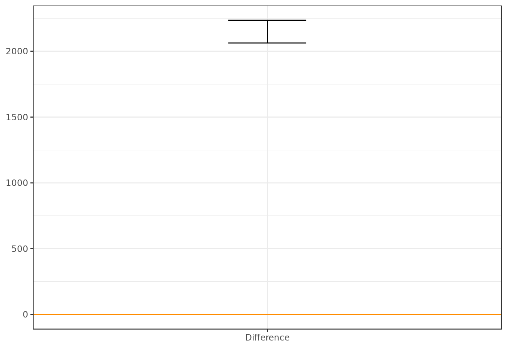
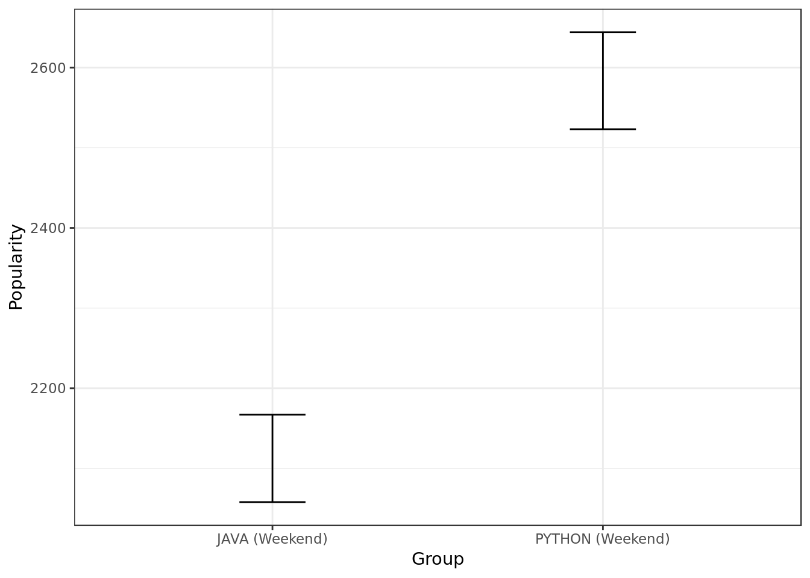

Analysis on Github commits (2016-2017)
Introduction
The code and data employed here can be found at the original repository. The data employed on this report is a sample of the commits made on some of the repositories on Github each day from 2016 to 2017.
Data Overview
readr::read_csv(here::here("data/github-users-committing-filetypes.csv"),
progress = FALSE,
col_types = cols(
file_extension = col_character(),
month_day = col_integer(),
the_month = col_integer(),
the_year = col_integer(),
users = col_integer()
)) -> data
data %>%
glimpse()## Observations: 13,802
## Variables: 5
## $ file_extension <chr> "md", "md", "md", "md", "md", "md", "md", "md",...
## $ month_day <int> 18, 17, 27, 16, 26, 21, 4, 22, 23, 1, 12, 3, 2,...
## $ the_month <int> 2, 2, 1, 2, 1, 3, 2, 2, 2, 2, 4, 2, 2, 2, 4, 3,...
## $ the_year <int> 2016, 2016, 2016, 2016, 2016, 2017, 2016, 2016,...
## $ users <int> 10279, 10208, 10118, 10045, 10020, 10015, 9991,...Popularity
We will refer to popularity as the median number of users that commited files of a certain language. In other words, the more people commit files in a programming language the more popular it is.
Is it Weekend yet?
- We will recreate a date object based on the data-frame columns (month_day, the_month, the_year) and from this date object deduce whether the day of that observation was a weekend day or not (isWeekend).
data %>%
mutate(cronology = lubridate::ymd(paste(the_year,
the_month,
month_day)),
isWeekend = timeDate::isWeekend(cronology)) -> data
data %>%
sample_n(10)## # A tibble: 10 x 7
## file_extension month_day the_month the_year users cronology isWeekend
## <chr> <int> <int> <int> <int> <date> <lgl>
## 1 yml 16 6 2016 2586 2016-06-16 FALSE
## 2 rb 28 9 2016 1338 2016-09-28 FALSE
## 3 scss 2 10 2016 619 2016-10-02 TRUE
## 4 yaml 3 11 2016 563 2016-11-03 FALSE
## 5 rb 12 2 2017 650 2017-02-12 TRUE
## 6 h 21 5 2016 1679 2016-05-21 TRUE
## 7 h 25 1 2016 2940 2016-01-25 FALSE
## 8 ts 18 11 2016 756 2016-11-18 FALSE
## 9 xml 13 3 2017 2980 2017-03-13 FALSE
## 10 scss 22 6 2016 1260 2016-06-22 FALSEAll file extensions
data %>%
group_by(file_extension, isWeekend) %>%
summarise(popularity = sum(users)) %>%
ggplot(aes(x=reorder(file_extension,popularity),
y = popularity,
fill=isWeekend)) +
geom_bar(stat="identity") +
theme(axis.text.x = element_text(angle=60, hjust=1)) +
labs(x="File extension",y="Number of editing users")- A lot of md and web related files (json, js, html) were committed on weekends. Looks like documenting and working on the front-end goes on during weekends, poor front-end developers…
data %>%
group_by(cronology,isWeekend) %>%
summarise(popularity = sum(users)) %>%
ggplot(aes(popularity,cronology,color=isWeekend)) +
geom_segment(aes(x = 0, y = cronology,
xend = popularity,
yend = cronology),
color = "grey50",
size=0.15) +
geom_point() +
coord_flip() +
labs(y="Point in Time",
x="Number of editing users")
- We can see a sizable decrease in user’s commits around January, this matches typical holidays.
Python and Java
data %>%
filter(file_extension %in% c("py","java")) %>%
group_by(file_extension, isWeekend) %>%
summarise(popularity = median(users)) %>%
ggplot(aes(x=reorder(file_extension,popularity),
y = popularity,
fill=isWeekend)) +
geom_bar(stat="identity") +
theme(axis.text.x = element_text(angle=60, hjust=1)) +
labs(x="File extension",y="Popularity")
- In terms of sample Python seems to be more popular on weekends than Java.
- In terms of sample both Java and Python seem to more popular on weekdays than on weekends.
data %>%
filter(file_extension %in% c("py","java")) %>%
ggplot(aes(users,cronology,color=isWeekend)) +
geom_segment(aes(x = 0, y = cronology,
xend = users,
yend = cronology),
color = "grey50",
size=0.15) +
geom_point() +
facet_wrap(~ file_extension,
nrow = 2) +
coord_flip() +
labs(y="Point in Time",
x="Number of editing users")
- Both Python and Java reflect the same drop on file editions around January.
Statistical Inference
As talking about the sample isn’t enough to draw conclusions about the population (coders in Github), further into this report we will make use of statistical inference.
Java
Overview
data %>%
filter(file_extension == "java") %>%
ggplot(aes(x="",
y=users,
group=isWeekend,
fill=isWeekend)) +
geom_boxplot() +
labs(y="Number of editing users") +
ggtitle("Java popularity (weekdays vs weekend)") +
theme(axis.title.x=element_blank(),
axis.text.x=element_blank(),
axis.ticks.x=element_blank())
- In terms of sample we see more clearly that Java coders work way more during the week.
Inference on two samples
- We will make use of confidence intervals at a 95% degree of confidence
data %>%
filter(file_extension == "java") %>%
filter(!isWeekend) %>%
bootstrap(median(users), R = 10000) %>%
CI.percentile(probs = c(.025, .975)) -> java.week
data %>%
filter(file_extension == "java") %>%
filter(isWeekend) %>%
bootstrap(median(users), R = 10000) %>%
CI.percentile(probs = c(.025, .975)) -> java.weekend
cat(paste("Java on week days:\n"))
java.week
cat(paste("\n\nJava on weekend days:\n"))
java.weekend## Java on week days:
## 2.5% 97.5%
## median(users) 3533.254 3667
##
##
## Java on weekend days:
## 2.5% 97.5%
## median(users) 2058 2167
df = data.frame(rbind(java.week,
java.weekend[rownames(java.weekend),]))
df$medida = c("JAVA (Week)", "JAVA (Weekend)")
df %>%
ggplot(aes(x = medida, ymin = X2.5., ymax = X97.5.)) +
geom_errorbar(width = .2) +
labs(y= "Popularity", x="Group")Looking at the confidence intervals (C.I.) of Java popularity during the week and during the weekend we can say at a 95% degree of confidence that there’s a statistically significant difference between Java popularity during the week and the weekend.
Inference on the unpaired difference of two samples
- Let’s bootstrap the unpaired difference between java popularity during the week and java popularity during the weekend.
data %>%
filter(file_extension == "java") -> java
b.diff.means <- bootstrap2(java$users,
treatment = java$isWeekend,
median, R = 10000)
means.diff = CI.percentile(b.diff.means, probs = c(.025, .975))
means.diff
data.frame(means.diff) %>%
ggplot(aes(x = "Difference",ymin = X2.5., ymax = X97.5.)) +
geom_errorbar(width = .2) +
geom_hline(yintercept = 0, colour = "darkorange") +
labs(x="")## 2.5% 97.5%
## median: FALSE-TRUE 1390 1561.5- The C.I shows us that Java is more popular during the week (Interval is exclusively above 0). This was expected given the business feel around the Java community.
Looking at the confidence intervals (C.I.) of the unpaired difference between java popularity on the week and java popularity during the weekend we can say at a 95% degree of confidence that Java is more popular during the week than during the weekend.
Python
Overview
data %>%
filter(file_extension == "py") %>%
ggplot(aes(x="",
y=users,
group=isWeekend,
fill=isWeekend)) +
geom_boxplot() +
labs(x="", y="Number of editing users") +
ggtitle("Python popularity (weekday vs weekend)") +
theme(axis.title.x=element_blank(),
axis.text.x=element_blank(),
axis.ticks.x=element_blank())
- In terms of sample we see more clearly that Python coders work way more during the week.
Inference on two samples
data %>%
filter(file_extension == "py") %>%
filter(!isWeekend) %>%
bootstrap(median(users), R = 10000) %>%
CI.percentile(probs = c(.025, .975)) -> python.week
data %>%
filter(file_extension == "py") %>%
filter(isWeekend) %>%
bootstrap(median(users), R = 10000) %>%
CI.percentile(probs = c(.025, .975)) -> python.weekend
cat(paste("Python on week days:\n"))
python.week
cat(paste("\n\nPython on weekend days:\n"))
python.weekend## Python on week days:
## 2.5% 97.5%
## median(users) 4667 4792.5
##
##
## Python on weekend days:
## 2.5% 97.5%
## median(users) 2520.5 2643
df = data.frame(rbind(python.week,
python.weekend[rownames(python.week),]))
df$medida = c("PYTHON (Week)", "PYTHON (Weekend)")
df %>%
ggplot(aes(x = medida, ymin = X2.5., ymax = X97.5.)) +
geom_errorbar(width = .2) +
labs(y= "Popularity", x="Group")
Looking at the confidence intervals (C.I.) of Python popularity during the week and the weekend we can say at a 95% degree of confidence that there’s a statistically significant difference between Python popularity during the week and Python popularity during the weekend.
Inference on the unpaired difference of two samples
- Let’s bootstrap the unpaired difference between Python popularity during the week and Python popularity during the weekend.
data %>%
filter(file_extension == "py") -> python
b.diff.means <- bootstrap2(python$users,
treatment = python$isWeekend,
median, R = 10000)
means.diff = CI.percentile(b.diff.means, probs = c(.025, .975))
means.diff
data.frame(means.diff) %>%
ggplot(aes(x = "Difference",ymin = X2.5., ymax = X97.5.)) +
geom_errorbar(width = .2) +
geom_hline(yintercept = 0, colour = "darkorange") +
labs(x="")
## 2.5% 97.5%
## median: FALSE-TRUE 2063 2234- The C.I shows us that Python is more popular during the week than during the weekend (Interval is exclusively above 0).
- The former was not unexpected to be honest, given that there’s a whole business segment around Python despite its carefree vibes.
Looking at the confidence interval (C.I.) of the unpaired difference between Python popularity during the week and Python popularity during weekends we can say at a 95% degree of confidence that Python is significantly more popular during the week than during the weekend.
Python/Java on the weekend
Overview
data %>%
filter(isWeekend) %>%
filter(file_extension %in% c("py","java")) %>%
ggplot(aes(x=file_extension,
y=users,
group=file_extension,
fill=file_extension)) +
geom_boxplot() +
ggtitle("Python vs Java (Weekends)") +
theme(axis.title.x=element_blank(),
axis.text.x=element_blank(),
axis.ticks.x=element_blank()) +
labs(y="Number of users editing files")- In terms of sample we see more clearly that Python is more popular on weekends than Java.
Inference on two samples
cat(paste("Java on weekend days:\n"))
java.weekend
cat(paste("\n\nPython on weekend days:\n"))
python.weekend## Java on weekend days:
## 2.5% 97.5%
## median(users) 2058 2167
##
##
## Python on weekend days:
## 2.5% 97.5%
## median(users) 2520.5 2643
df = data.frame(rbind(java.weekend,
python.weekend[rownames(python.week),]))
df$medida = c("JAVA (Weekend)", "PYTHON (Weekend)")
df %>%
ggplot(aes(x = medida, ymin = X2.5., ymax = X97.5.)) +
geom_errorbar(width = .2) +
labs(y= "Popularity", x="Group")
Looking at the confidence intervals (C.I.) of Java and Python popularity during the weekend we can say at a 95% degree of confidence that there’s a statistically significant difference between Java and Python popularity during the weekend.
Inference on the unpaired difference of two samples
- Let’s bootstrap the unpaired difference between Java and Python popularity during the weekend.
data %>%
filter(isWeekend) %>%
filter(file_extension %in% c("py","java")) -> weekend
b.diff.means <- bootstrap2(weekend$users,
treatment = weekend$file_extension,
median, R = 10000)
means.diff = CI.percentile(b.diff.means, probs = c(.025, .975))
means.diff
data.frame(means.diff) %>%
ggplot(aes(x = "Difference",ymin = X2.5., ymax = X97.5.)) +
geom_errorbar(width = .2) +
geom_hline(yintercept = 0, colour = "darkorange") +
labs(x="")## 2.5% 97.5%
## median: java-py -548.5 -382.5- The C.I shows us that Python is more popular than Java during the weekend (Interval is exclusively below 0).
- Python has a much more carefree vibe to it than Java (which is heavily tied to a business environment). It comes as no surprise that people would rather use Python on the weekend.
Looking at the confidence intervals (C.I.) of the unpaired difference between Java and Python popularity during the weekend we can say at a 95% degree of confidence that Python is significantly more popular during the weekend than Java.